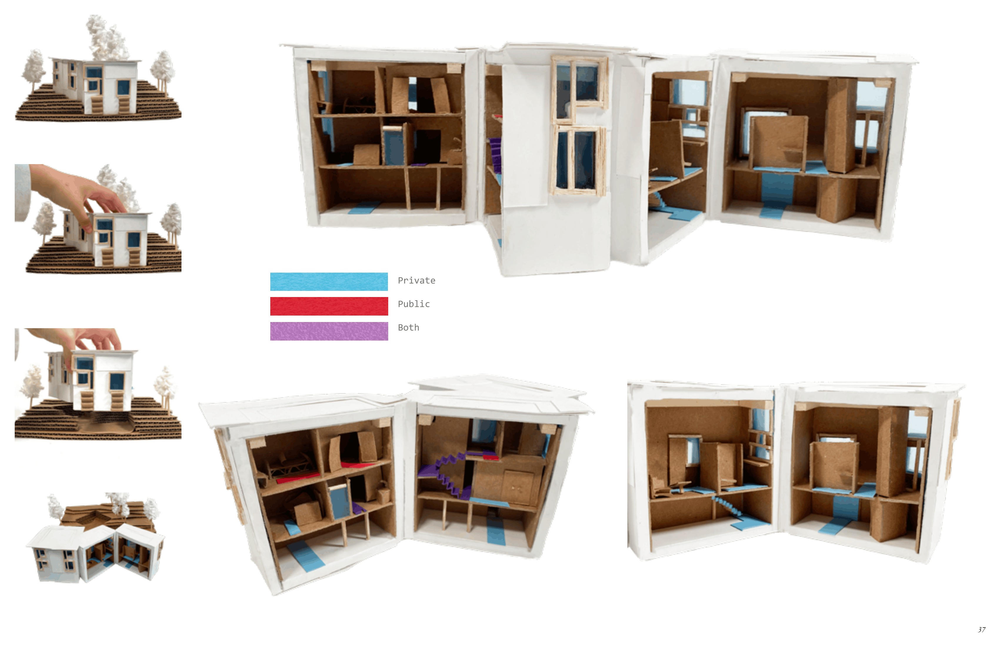
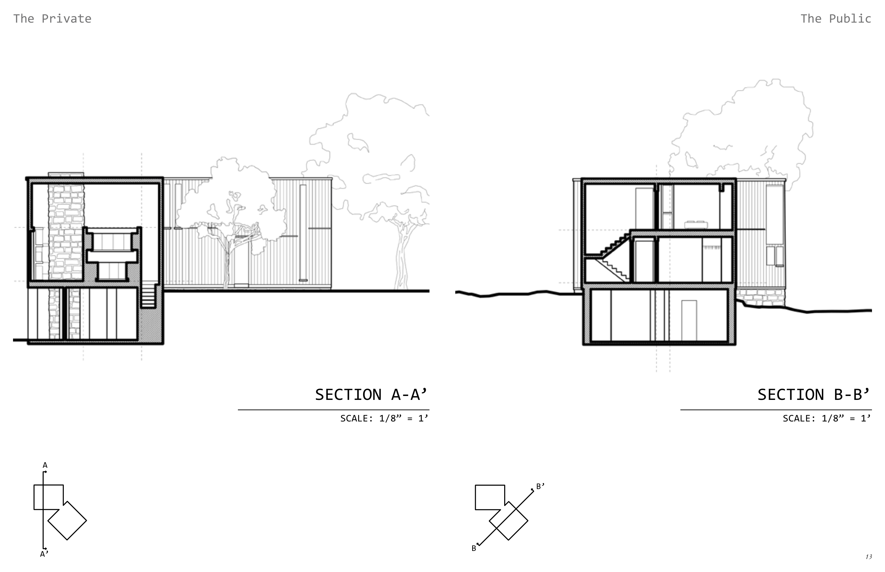

Fisher House: A Precedent Study
A study exploring Louis Kahn's Fisher House as a testing ground of spatial orders and environmental control in a domestic space.
Academic Term: 2026 Spring
Instructor: Tonya Markiewicz

Project Description
Louis Kahn's Fisher House was designed in 1967 for Mrs. Doris Fisher and Dr. Norman Fisher, a practicing physician. Living in Hatboro, Pennsylvania, the family sought both seclusion in the woods and space for Dr. Fisher to receive his patients. This spatial conversation between public and privacy makes the house an ideal site for exploring architectural hierarchy. Moreover, its time of construction is the same as several of Kahn's larger-scale projects, allowing the Fisher House to act as a testing ground for strategies Kahn was developing for those larger projects.


This handmade model explores both interior and exterior conditions and how Kahn differentiates between the two spaces of differing light, movement, and purpose. For example, the public-facing spaces include thicker walls and a denser grid system, producing sound and light barriers that slow movement, speed up time, and reinforce privacy.
